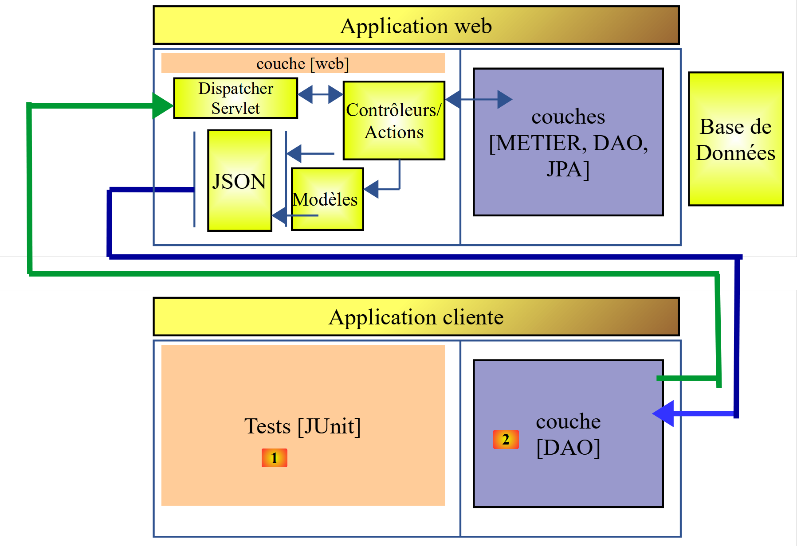
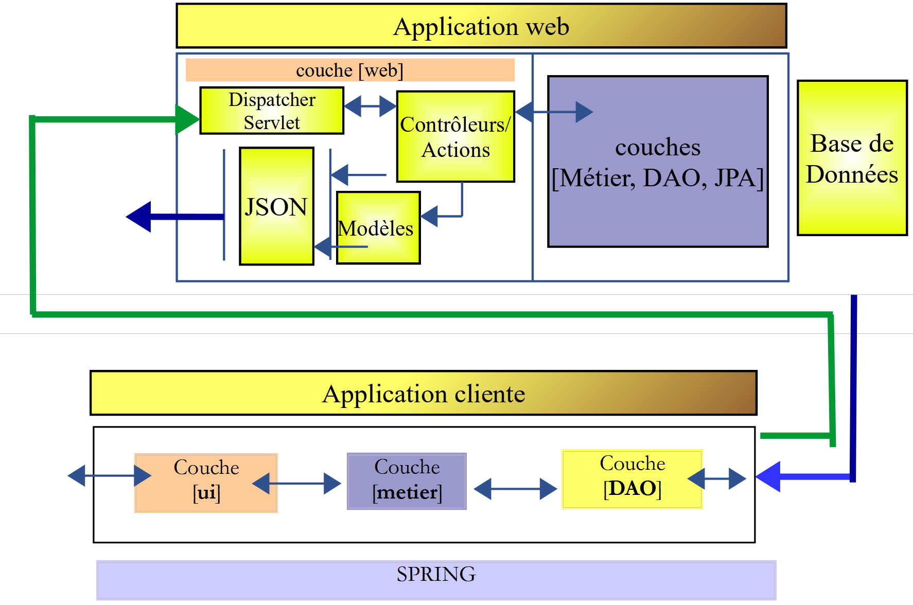
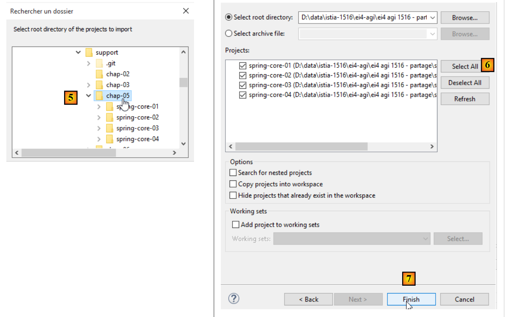

1. Introducción
1.1. Contexto
El PDF del documento se puede encontrar |AQUÍ|.
Los ejemplos del documento están disponibles |AQUÍ|.
Este documento es a la vez un curso y un TD (Trabajo Dirigido) universitario. Está destinado a principiantes. Utiliza las siguientes fuentes:
Referencias:
Denotaremos estas referencias respectivamente como [ref1] y [ref2]. La fuente [ref1] es antigua (2002), pero suficiente para este documento, donde solo se utiliza para su presentación de la sintaxis del lenguaje Java y sus acciones elementales. El resto de la información necesaria para la realización de TD se presenta en este documento en capítulos titulados [Cours]. Estos capítulos proceden directamente de [ref2] (2015) y, en algunos casos, se han simplificado.
El objetivo del documento es enseñar el lenguaje Java desde una perspectiva profesional. Por este motivo, nos basamos en gran medida en el framework Spring [http://spring.io/], muy utilizado en el desarrollo JEE (Java Enterprise Edition). Lógicamente, este curso debería ir seguido de un curso JEE. Así ocurre en la Istia (Universidad de Angers). JEE es la principal fuente de empleo en la actualidad (noviembre de 2015) para los jóvenes desarrolladores con un título de máster. Existen muchas otras tecnologías además de Spring en el mundo JEE. Spring tiene la ventaja de ser comprensible y, sobre todo, de aportar buenas prácticas de codificación reutilizables fuera del ecosistema Spring. Esto explica su elección aquí.
Este TD se utiliza desde hace más de 10 años y ha evolucionado con las tecnologías. Le siguen (en el IstiA) un TD, un JEE y un [Introduction à Java EE]. Este último, TD, data de 2012 (estamos en 2015) y merecería una actualización. Presenta la ortodoxia JEE a través del marco web JSF2 (Java Server Faces) y los EJB3 (Enterprise Java Bean). En conjunto, estos dos TD han permitido a numerosos estudiantes conseguir prácticas JEE en ESN (empresas de servicios digitales) y ser contratados allí inmediatamente después.
En este documento no se encontrará una presentación formal de todas las facetas de Java. A lo largo de los años, el comportamiento de los desarrolladores junior ante un problema ha evolucionado mucho. Ahora utilizan casi sistemáticamente Internet para encontrar fragmentos de código que, al unirlos, forman un programa. Si se les imparte un curso, lo utilizan muy poco y prefieren volver a recurrir a Internet. Aunque al principio tenía mis dudas sobre esta forma de trabajar, me han sorprendido los resultados obtenidos. Así, alumnos con dificultades lograban crear programas que funcionaban, mientras que sin la ayuda de Internet probablemente no lo habrían conseguido. Ahora me baso en esta forma de trabajar.
Los fragmentos de código no ofrecen una visión global de la arquitectura de una solución, y uno de los objetivos de este documento es precisamente ofrecerla. Los estudiantes realizan este TD como un TP, de forma autónoma. No hay clases magistrales. Hay un calendario que les indica el avance que se espera de ellos a lo largo de las sesiones. Pueden ir retrasados o adelantados con respecto a este calendario. Su avance se comprueba mediante una serie de validaciones que deben presentar al profesor. Este está presente tanto para darles explicaciones cuando las solicitan como para validar su trabajo. Cada uno va a su ritmo. Al final de las 36 horas asignadas a este TD, algunos habrán realizado un 50 % más de validaciones que otros, pero todos, al menos ese es el objetivo, habrán comprendido lo que han hecho de forma autónoma. Este TD se puede realizar sin la ayuda de un profesor.
Este documento no es adecuado para quienes busquen un curso académico sobre Java, algo en lo que se explique Java de forma progresiva y estructurada y donde se explique y justifique cada detalle de la sintaxis. Lo que aquí se propone es más bien un enfoque experimental. Es probable que el estudiante no comprenda todo lo que se le ofrece en el documento, pero seguramente sabrá reutilizar su contenido de forma adecuada y la comprensión de los detalles vendrá con la experiencia.
Este documento tampoco es un curso de algoritmos. El algoritmo del TD es básico y puede ser resuelto por cualquier principiante que esté siguiendo sus primeras clases de algoritmos. El documento se centra en el entorno de desarrollo profesional en Java, con sus numerosas bibliotecas o marcos de trabajo, y en la arquitectura del código. La mayoría de los estudiantes que veo pasar presentan deficiencias en algoritmos que luego son confirmadas por los tutores de prácticas. Así que sí, el dominio de los algoritmos es importante, pero no es el objetivo de este curso-TD.
Por último, este documento (diciembre de 2015) no presenta las últimas novedades de Java, en particular los streams y las funciones lambda. No obstante, se utilizan algunos elementos de la última versión JDK, la JDK 1.8, y los códigos que siguen deben compilarse con esta JDK.
1.2. Contenido
El capítulo 2 presenta el tema del TD, un cálculo de resultados electorales. El problema es básico. El capítulo 2 pide implementar la solución en dos lenguajes, C# y Java, que son muy similares. La implementación se realiza sin clases. El objetivo es presentar la sintaxis de Java, sus instrucciones básicas y el entorno de desarrollo integrado (IDE) Eclipse, que se utiliza para crear proyectos en Java.
El capítulo 3 pide implementar la solución del TD en Java con clases. El objetivo es presentar los conceptos de clases, herencia, interfaces y clases genéricas. Se introduce el concepto de prueba unitaria JUnit.
El capítulo 4 introduce los conceptos que subyacen a los capítulos siguientes:
- las arquitecturas por capas;
- la programación por interfaces;
- el uso de Spring para implementar los dos conceptos anteriores;

El capítulo 5 presenta el marco Spring con cuatro proyectos.
El capítulo 6 presenta API JDBC, que es una interfaz de acceso a bases de datos.
El capítulo 7 implementa la capa [DAO] (Data Access Object) del TD con el API JDBC y Spring.

El capítulo 8 implementa la capa [métier] del TD:

El capítulo 9 implementa la capa [ui] del TD con una aplicación de consola:

El capítulo 10 implementa la capa [ui] de TD con una aplicación gráfica que utiliza la biblioteca de componentes Swing:


El capítulo 11 presenta la gestión de bases de datos con el marco [Spring Data], una rama del ecosistema Spring. Introduce la especificación JPA (Java Persistence API), que permite a la capa [DAO] manipular objetos en lugar de manipular SQL (Structured Query Language). La arquitectura por capas evoluciona de la siguiente manera:

El capítulo 12 aplica el capítulo 11 al implementar el acceso a la base de datos de TD con [Spring Data].
El capítulo 13 muestra cómo exponer una base de datos en la web con [Spring MVC], que es otra rama del ecosistema Spring. La arquitectura evoluciona hacia una arquitectura cliente/servidor:

Los capítulos 14 y 15 transforman la aplicación de TD en una aplicación cliente/servidor:

El capítulo 16 muestra cómo proteger el acceso a una aplicación web con [Spring Security], otra rama del ecosistema Spring.

El capítulo 17 retoma TD y protege el servicio web de las elecciones.
El capítulo 18 aborda el problema de las solicitudes entre dominios:
 |
- en [1], una aplicación web sirve páginas HTML / Javascript;
- en [2], el navegador ejecuta el Javascript integrado en las páginas HTML para consultar el servicio web seguro [3-4];
Sea D1=http://máquina1:puerto1 el dominio del servidor [1] y D4=http://máquina4:puerto4 el dominio del servidor [4]. Si los servidores [1] y [4] no se encuentran en el mismo dominio [D1!=D4], entonces las solicitudes de [3] a [4] se denominan solicitudes entre dominios. Debido a las restricciones de seguridad implementadas por los navegadores, su configuración puede resultar problemática. Analizaremos una solución.
El capítulo 19 implementa las solicitudes entre dominios con la aplicación de las elecciones.
1.3. Herramientas utilizadas
Los siguientes ejemplos se han probado en el siguiente entorno:
- ordenador con Windows 10 Pro de 64 bits;
- JDK 1.8 (apartado 22.1);
- IDE Spring Tool Suite 3.6.3 (apartado 1);
- Netbeans 8.1 (apartado 22.4);
- navegador Chrome (no se utilizaron otros navegadores);
- extensión de Chrome [Advanced Rest Client] (apartado 1);
- WampServer, que incluye SGBD, MySQL y la herramienta [PhpMyAdmin] para gestionarlo (apartado 22.7);
Es importante utilizar un JDK 1.8. Algunos ejemplos utilizan elementos de este JDK. La mayoría de los ejemplos son proyectos Maven que pueden abrirse indistintamente con IDE, Eclipse [https://www.eclipse.org/], IntellijIDEA Community Edition, [https://www.jetbrains.com/idea/download/] y Netbeans [https://netbeans.org/]. A continuación, las capturas de pantalla proceden de IDE Spring Tool Suite, una variante de Eclipse.
1.4. Soporte
Los proyectos de Eclipse de este documento están disponibles en el sitio web [https://tahe.developpez.com/tutoriels-cours/intro-java-spring/serge-tahe-introduction-au-langage-java-et-a-l-ecosysteme-spring/].
 |
Para importar los proyectos de un capítulo, proceda con Eclipse tal y como se indica en [1-8]:
 |
La mayoría de los proyectos son proyectos Maven. Si tras la carga estos presentan errores, ejecute [Alt-F5] y siga el procedimiento de [9-10]. Los proyectos Maven seleccionados se volverán a compilar.
 |